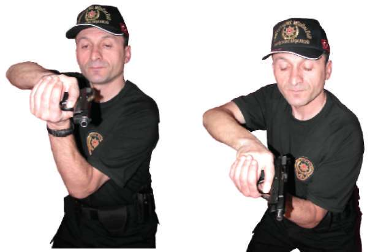

Silahı kurma tekniği,( atışa hazır olmayan silahı aktif duruma getirmek)hedefle ani karşılaşmalarda zaman çok önemli olduğu için etkili bir tekniktir
Yarı otomatik bir tabancanın fişek yatağına fişek sürüp silahı emniyete alarak taşımak, ani karşılaşılan hedeflerde silahın emniyetini açıp hedefe nişan oluştururken zaman kaybını en aza indirecektir.
^ Fişek yatağında fişek varken emniyete alınmadan taşınan yarı otomatik bir tabancayı taşıma esnasında ya da tabancayı bulunduğu yerden çekerken, tetiğin her hangi bir yere takılarak kontrol dışı tabancanın ateşlemesine sebebiyet verebilmektedir. Bu teknikle kontrol dışı ateşlemelerin ( patlamaların ) meydana gelmesinin önlendiği tespit edilmiştir.
^ Teknikler yeterince pratik yapılarak çalışıldığında silah kullanmayı ve ni
şan oluşturmayı hızlandırdığı gözlemlenmiştir.
Şekil --3) Yarı Otomatik Tabancayı Kurarak Atış İstasyonu 44
BÖLÜM
İLERİ SEVİYE ATIŞ TEKNİKLERİ
1.2. YARI OTOMATİK TABANCAYI VE MP5 MAKİNALI TABANCAYI KONTROL ETME TEKNİĞİ
Açıklama
Tamamlanan her atış tekniğinden sonra veya pozisyon değişikliklerinden önce silahı, boş kovan atacak yeri üste gelecek şekilde göğsünüze doğru toplayın. Boş kovan sıkıştırıp sıkıştırmadığını veya herhangi bir nedenle mekanizmanın yerine oturup oturmadığını gözle kontrol edin. Eğer kovan sıkışmışsa pasif el ile boş kovana vurarak mekanizmanın yerine oturtulmasını sağlayın.
Mekanizma fişeği fişek yatağına tam oturtamamışsa avuç içi ile mekanizmaya arkadan vurarak fişeğin yatağına oturmasını sağlayın. Silahın bu çabalara rağmen arızası devam ediyorsa, hızla şarjörü çıkartarak arızayı giderin. Bu teknik MP5 makinalı tabanca içinde geçerlidir. (Bakınız Resim -4.a/4.b) 4. Hareket
3. Hareket
Resim-4.a) Tutukluk Durumunda Yarı Otomatik Tabancayı Kontrol Etme Tekniği 45

1. Hareket
2. Hareket
3. Hareket
4. Hareket
Resim-4.b) Tutukluk Durumunda Yarı Otomatik Tabancayı Kontrol Etme Tekniği